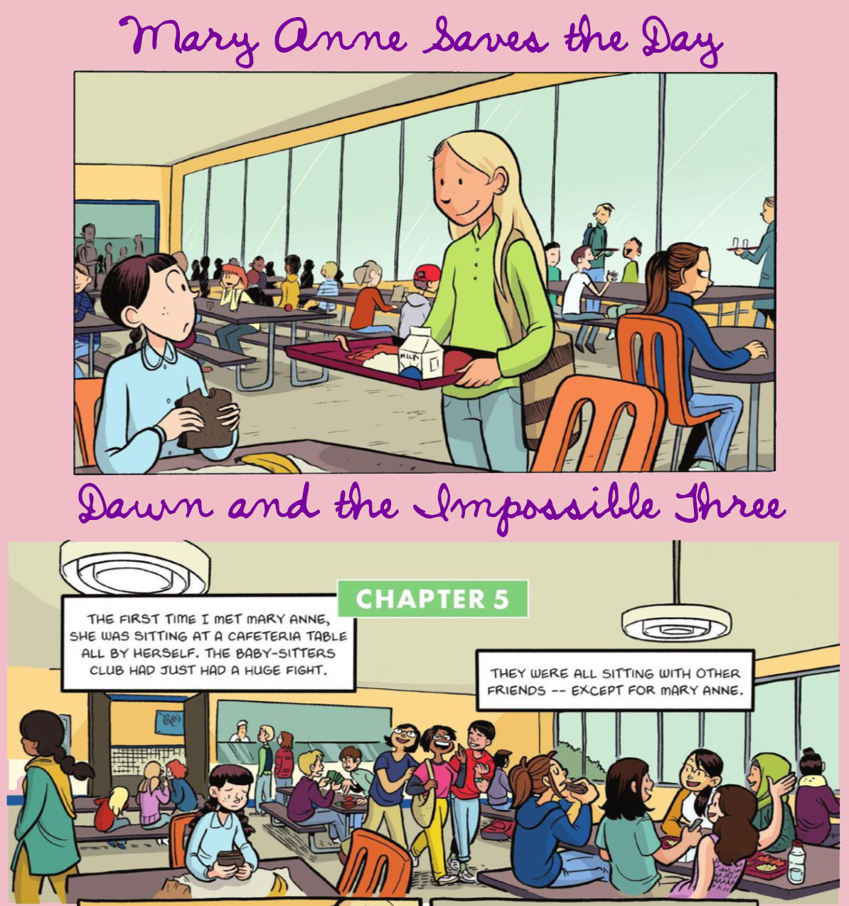

DSC #5: The DSC and the Impossible TEI Quandaries
Contents
DSC #5: The DSC and the Impossible TEI Quandaries#
by Elisa Beshero-Bondar, Lee Skallerup Bessette, Quinn Dombrowski, and Roopika Risam, June 25, 2020

Quinn#
In the weeks before the world shut down due to COVID-19, Lee and I got into a Twitter discussion with folks who work on comic books and computational image analysis, mulling over what we could do with the graphic novels. I’d scanned the English and French versions of “Kristy’s Great Idea”, and had noticed at least one change that went beyond the text bubbles:

Were there other places in the translations where images had been modified? That’s a harder question than you might think. There’s lots of algorithms for looking at whether an image has been modified – but they all assume that someone took a specific source image file, made modifications to that same file, and then saved the file. What I wanted to do was compare two completely different source image files that show the same page of a comic book in the original, and in translation. Basically the same contents (from the perspective of a human viewer), but totally different image files (from the perspective of the computer). This turns out to be much harder. There’s a lot of exciting work going on in the area of computational analysis of images (see, for instance Taylor Arnold and Lauren Tilton’s Distant Viewing Lab), but on the whole, tools for image analysis have lagged behind tools for textual analysis.
So how else can we work with the graphic novels, if we’re not working with the images as images? Comic Book Markup Language (CBML) came to mind. CBML (as written up by John Walsh in the 2012 DH Quarterly article, “Comic Book Markup Language: An Introduction and Rationale”) is a variant of the Text Encoding Initiative (TEI) conventions, originally developed for marking up different kinds of texts, that adds in elements, attributes, and vocabularies specifically designed for use with comic books.
Markup? Elements? Attributes? That’s a lot of jargon already – and we haven’t even gotten to schemas, XML, XSLT, XPath, XQuery. (There’s so many X’s in this area of DH that you might get the wrong idea – but don’t worry, it’s all G-rated as long as you disregard the colorful language I end up muttering as I try to write and debug the XSLT.) Let’s start from the beginning.
But before we dive into the tech, you might want to read Chapter 2 about what the Data-Sitters Club is, and you definitely should meet Lee Skallerup-Bessette, who’s been working on the Multilingual Mysteries with me but is making her main-series debut here.
Lee#
While I was initially brought into the Data-Sitters Club because of my experience and expertise with French (and specifically Québécois) as well as plumbing the depths of national library databases and used bookstores online, I have a number of “adjacent” areas of expertise that are applicable here, too. I’m “adjacent” to DH in a lot of ways, but I am also “adjacent” to YA graphic novels, as well as adaptations and TEI.

I got interested in YA graphic novels and comics because my kids absolutely adored them, which led me to volunteer to review a book for Comics Grid on YA graphic novels and comics and then one on Comic Book Pedagogy. In these, you can read all about my history with the genre. At the same time, I had the pleasure of working alongside Zach Whalen, who is a “real” comics scholar, as well as someone who has more than a passing interest in image visualization. I learned a great deal from him as we talked about his graphic novel class, as well as thinking about DH tools and image visualization.
In my (previous? Current? On hiatus?) research on Dany Laferrière, part of my interest was not only how he was literally translated into English, but how his work was shaped and reshaped across genres, including film, apps, and illustrated/graphic novel editions of his work. Dude rewrote everything he’s ever written so many times and over so many mediums, I had to do the work to research what these changes meant and how the medium may have impacted the decisions behind these changes, and vice versa (because a filmmaker adapted one of his books which led the author to completely revise and rewrite the book under a completely different title and my brain hurts now so let’s just move along).
Anyway, analyzing visual culture and book culture FTW! And hey, text analysis, too! How was this seven years ago already?!?!?!
So when Quinn was like, we need to do TEI but I’m also really interested in the graphic novels and visual representation, I was like, yeah, I can do that. I’ve “dabbled.” But more importantly for me was understanding how the books have changed and been adapted as these are the versions that my kid (and kids) are now consuming. What choices have been made in terms of what has been transferred, modernized, dropped, erased, added, and adopted, and how does that impact the narrative? There is so much on the page that takes place in the characters’ minds in these books, how is that rendered in illustration? And, how do you fill up the narratively empty space of the backgrounds of Stoneybrook? In other words, there is so much not described, and how does the artist choose to portray those gaps? It was a fascinating question, and on that I thought, why not? TEI sounds like a good way (ok, one way) to get at answering the question.
Quinn#
What does it mean to mark something up?#
TEI is associated with a kind of DH activity that people have been doing since the 1980’s: creating digital editions of texts. Digital editions take your classic printed critical edition of a text to the next level, allowing scholars to annotate a text in many different ways at the same time, reflecting various aspects of the text’s editorial history, physical manifestation in a particular edition, and/or content. “Marking up” a text just means annotating it, typically using a consistent set of conventions for how you represent different things. The “consistent set of conventions” part is important: markup is less like jotting down notes in the margins of a book, and more like going through a book with a set of highlighters, using one color to mark speech acts by women, and another color to mark metaphors, and a third color to mark allusions to Emily Dickinson. If your book contains a speech act by a woman that contains a metaphor, some of the text might be highlighted with two colors.
When you’re doing TEI markup, you typically start with a plain text file (.txt) with all the words in the text you’re marking up. (How do you get that? Check out DSC #2: Katia and the Phantom Corpus.) That text is your “book” – and your “highlighters” are what’s called “elements”, and “attributes” that modify those elements. Elements and attributes represent real-world things and their traits, respectively. They make explicit things in the text that you as a reader can recognize – which makes it possible for computers to recognize those things as well. Once a computer can recognize those things, they can do the things that computers are good at, like counting, comparing, and visualizing. This gets us to the “why” of TEI: depending on what you’ve marked up, you can answer questions like, “Which chapters underwent the most extensive revisions?” or “People of which gender(s) speak most often in this book?”, or “Which characters make the most Emily Dickinson allusions, in which settings?”
Here’s the catch, though: to answer each of those questions, you need to mark up different things. To be able to look at revisions, you’d need to have access to multiple drafts of the text, and you’d have to mark up all the places where changes were made. To look at speech patterns by character gender, you’d need to mark up which character is performing each speech act, and you’d also need a list of all the characters with associated biographical metadata (including gender). To look at which characters make Emily Dickinson allusions, you’d need to mark up which character performed which speech act, as well as all the Emily Dickinson allusions in the text. You’d also have to decide how to handle attributing any Dickinson allusions made in the narration (separate from speech acts), if the narration is in the first person or in some other way reflects a character’s viewpoint or perspective.
Marking up much besides a few basic, predictable structural things (e.g. paragraphs and chapters) or very simple markup of a defined set of content things (e.g. marking up every occurrence of character names, regardless context, given a list of all those names and variants) requires a lot of manual work. You might be able to hire an assistant for some of it – most people can reliably mark up speaker info, given some examples and guidance – but you need someone with specialized knowledge to reliably recognize Emily Dickinson allusions.
A lot of the methods the Data-Sitters Club has used so far have been compatible with an agenda of corpus exploration. We don’t know exactly what we’re looking for, but let’s find out if there’s anything there! TEI is different. With TEI, you have to invest in marking up a particular set of things, guided by a particular set of questions that shape what, exactly, you’re marking up. The more things you mark up, the more kinds of questions you can answer – and the longer it takes to prepare your text to the point where you can begin your analysis.
The analogy with highlighting a paper book also works from another angle. The more highlighting and underlining you add to a book, the harder it can be to just read the text without getting distracted by all the overlapping colors that each signify something meaningful, but can dissolve into a rainbow jumble (like my high school International Baccalaureate English copy of When Rain Clouds Gather).

TEI can get like that, too. You start off with a plain text file that you can easily read:

And then you add markup:

And then some more:

And soon you realize you’ve spent a lot of time making a file that’s much less readable than what you started with. The only way out of this mess is to keep going and learn how to write XSLT (we’ll get to that shortly), in order to transform your text cluttered up with angled brackets back into something that’s readable – and/or something that can count, compare, and make use of all the annotations you’ve made.
A XXX Toolkit#
Here’s another tricky thing about TEI: you can do everything I’ve described so far – marking up stuff in your text, and then analyzing it – without TEI. TEI is just a set of guidelines for what elements to use, what attributes those elements should have, and how to structure them hierarchically. It is not meant to be a standard, where you can count on particular elements always appearing in a particular order, and you can write code that will work to analyze or display any arbitrary TEI file in a particular way. I’ve worked on projects that have tried and failed chasing that dream, and mine aren’t the only project corpses along that road.
The kind of syntax or formatting used for actually doing TEI markup is called XML (eXtensible Markup Language). There’s a whole set of languages that can be used together to locate, query, process, analyze, and transform XML documents: XSLT (eXtensible Style Sheet Language Transformations, a programming language used to transform XML), XPath (a formal way to navigate through XML documents), XQuery (for querying XML documents), and more. None of those languages for querying, transforming, and analyzing XML care about whether you’re using TEI, or any other set of elements and attributes that follow the rules for being “well-formed” XML.
The classic introductory DH reading for understanding the rules of XML and its associated ecosystem is an appendix in the TEI guidelines, “A Gentle Introduction to XML”; David Birnbaum has made things more accessible still with “What is XML and why should humanists care? An even gentler introduction to XML”. If you’re interested in understanding XML, David’s introduction is the place to start, and includes a glossary with a description of all the pieces of the XML toolkit and how they fit together. The tl;dr Data-Sitters Club version is as follows:
XML is a way of representing a text as a hierarchical tree of things. Yeah, it’s easy to problematize that model, but that’s a constraint of this particular set of DH tools and methods so if you want to use them, you’ve got to come to terms with it.
What you should be marking up with XML is structure (of the source material) and semantics (what is this stuff, in terms we care about). It’s abstracted from any kind of visual presentation. Even if you have a particular vision for how you want to transform your text for display once you’re done marking it up (e.g. having all character names displayed in red), your markup should reflect what it is, not how it’s going to look at the end – use an element like <name>, not <red>.
You write XML by putting element names in angled brackets at the beginning of the “stuff” that that element contains, and doing the same thing (with a forward slash before the element name) at the end of the “stuff”. And there has to be one single element that contains ALL THE THINGS in your XML. And you also have to close things in the order you open them – no overlapping tags. So here’s some well-formed XML that’s just a hierarchy of elements:
<claudias_bedroom>
<under_bed>
<book>The Clue in the Camera</book>
<candy>Almond Joy</candy>
</under_bed>
<closet>
<candy>Jolly Rancher</candy>
<candy>Jelly beans</candy>
<candy>gum</candy>
</closet>
</claudias_bedroom>
If you want to add attributes, they go inside the element tag that they’re modifying, separated by a space. (This is why elements and attributes can’t have spaces as part of their names.)
<claudias_bedroom state=”messy”>
<under_bed>
<book series=”nancy_drew”>The Clue in the Camera</book>
<candy type=”chocolate”>Almond Joy</candy>
</under_bed>
<closet>
<candy type=”fruit”>Jolly Rancher</candy>
<candy type=”fruit”>Jelly beans</candy>
<candy type=”other”>gum</candy>
</closet>
</claudias_bedroom>
This example XML above is well-formed, insofar as it follows the rules of XML. That’s different than valid, which means that it conforms to a schema. A schema provides an additional set of rules for which elements are allowed, in what order, with what attributes.
To be honest, if this example XML is valid, I’d like to have a little chat with whoever put together that schema. It’s kinda weird to have <claudias_bedroom>, <under_bed>, and <closet> all be elements of their own. Yes, they’re things, and they’re things that exist in a sort of hierarchy in the real world, but it’s oddly specific, in a way that might turn out to be frustrating when you get to the point of trying to display and analyze your XML. You really should ask why you’re doing this markup, and what other content might you need to mark up with this schema. Like, is your big-picture goal an inventory of what’s in every baby-sitter’s bedroom? Then you might want to be able to query across the bedrooms, which is easier if all the bedrooms are marked up with the same element. You can still handle ownership with an attribute, something like: <bedroom owner=”claudia”>. And you should probably go for something more generalized for the next level of location information, maybe something like <area>. And you can add an attribute to indicate where it is, and another to specify whether it’s visible – which could help us extract all the places where a baby-sitter might hide something: <area loc=”under_bed” visible=”false”>. And even <book> and <candy>, which sound reasonable enough at first… so what’s your taxonomy going to be for other things in the room? Do you want to be able to link <candy> with other foodstuffs? (e.g. to answer the question “What are the most common snacks in baby-sitter bedrooms?”) Maybe you’d be better off with something more general as your element – even something as general as <item> – and have a set of optional attributes that provide more information. When you’re making a list like this in XML, you may not even need to have the <item> elements contain anything. If you’re able to capture all the information you need in the element and attributes themselves, you can write self-closing elements, like these items:
<bsc_bedrooms>
<bedroom owner=”claudia”>
<area loc=”under_bed”>
<item type=”book” series=”nancy_drew” title=”the_clue_in_the_camera” permitted=”false” />
<item type=”book” series=”textbook” title=”algebra” permitted=”true” />
<item type=”candy” edible=”true” brand=”almond_joy” />
</area>
</bedroom>
<bsc_bedrooms>
You won’t get an error if you use spaces in attributes, but spaces are commonly used to separate multiple values of an attribute– so someone reading your XML might understand “nancy drew” as two values: “nancy” and “drew” rather than the girl detective series. It might be better to skip the “title” and “brand” attributes and just put that as text within the element. But text isn’t a complete free-for-all! There are certain characters – like the angled brackets themselves, as well as the ampersand (&) that you’re not allowed to write in valid XML, and you have to use the entity name instead. And this is very important when you’re marking up Claudia’s secret candy stash, because she doesn’t have M&Ms, she has: M&Ms.
So why bother with TEI?#
Since the X-family (XML, XSLT, XPath, XQuery, and friends) has all the functionality you need to annotate, analyze, and transform/display texts, why even bother with TEI? To be totally honest… for years, I didn’t. When I started doing DH, I worked on some pretty niche projects, like marking up excerpts from a Bulgarian dialectological atlas. It might have been possible to mark up the things that were important for my research question in a manner compatible with TEI, but it would have been convoluted and awkward and would have taken even longer. Instead, I made up my own schema – my own rules and set of elements – that covered only the things that mattered for my project, in a straightforward manner.
It would have been a different story if I had been applying for grant funding with this project. Much as TEI isn’t “a standard” (in the sense of mandating a whole lot of consistency and uniformity), it is still the standard for doing XML markup in DH. If you’re applying for a grant and you want to do XML markup that’s not TEI, you better have a really good story for why you’re not using TEI… or, you know, claim you’re using TEI for purposes of the grant, and just make sure your final output is transformed from your own custom schema into something TEI-compatible at the end.
As time has passed, though, I’ve come to appreciate TEI for more than just grant opportunism. Especially if you’re working on marking up literary text, TEI is like being handed the notes from a 30+ year series of brainstorming sessions where smart, thoughtful experts have put a lot of effort into thinking through how literary texts are structured, and how to reasonably model and capture things about those texts that other scholars might care about. Sure, you can (and should!) think through those issues for your own text – but you’re better off building from work that’s already been done than trying to invent everything from scratch. Think of all the options and alternatives that went into the super-basic XML example of Claudia’s bedroom above… and multiply that by however many different kinds of things you can imagine encountering in any text. It can be really helpful to not have to think through all of this from first principles.
That said, one major challenge with the TEI guidelines is that it can be hard to wrap your head around what even is there, or figure out – just from searching lists of elements on the TEI website – what elements and attributes might be a good fit for what you want to capture. The TEI-Lite subset of TEI is meant to be a pared-down set of options that are a little more manageable, but still can cover a lot of common scenarios, and there are other TEI variants defined for particular kinds of texts or tasks, like EpiDoc for ancient documents.
Even once you’ve chosen which flavor of TEI you’ll use – whether it’s the full standard set of elements, a constrained one like TEI-Lite, or a domain-specific one like EpiDoc – you’re not constrained to working within those boundaries. It’s very common (and even recommended) to modify the schema (a set of rules saying which elements and attributes exist, and how they’re organized hierarchically) specifically for your project. Even if you don’t add or change any of the elements or attributes from the flavor of TEI you’re working with, it can be very helpful to write some rules to constrain accidental variation like typos – for instance, by adding all character names to your schema as the allowed list of speakers, so that if you type mary_ane instead of mary_anne, the software you’re using to do the markup will alert you that there’s a problem. One easy tool for customizing schemas is TEI Roma.
Graphic novel or chopped-up text?#

Lee and I met in the early days of the March COVID-19 lockdown, right after we finished Multilingual Mystery #3, to talk about what we wanted to do for a DSC book on TEI. We’d both assumed that since we’d be working with graphic novels, it would make sense to use CBML – the TEI variant for comic books – but the more we talked, the more we realized that it might not be such an obvious decision after all.
If the TEI is like the notes from a 30-year brainstorm about text structure, CBML is like what you’d get if comic book people took those notes and wrote fanfic. (I mean that in a good way – fanfic deserves to be taken seriously.) It’s still in the same universe as TEI, but they’ve introduced some new elements (like “<balloon> A single speech, thought, or other type of balloon, commonly found in comics, comic books, and graphic novels”), and created a custom blend of elements drawn from different thematic “chapters” of TEI, including drama, names and dates, and text structure. It’s a blend that has invested a lot of thought in how to capture some of the properties specific to the medium of comics, including things like the nature of the transition between cells, and differentiating text bubbles from caption text from diegetic documents that the character can read in-universe. I can imagine a thorough CBML markup of a particular artist’s graphic novels serving as a basis for a kind of graphic novel stylometric analysis: how often do different artists use these devices, and in what contexts? To what extent are these patterns shaped by the artist vs. conventions defined for a particular series? The Baby-Sitters Club graphic novels are being published with a new artist after every four books (and book #8 is coming out this fall). Especially once there’s a third artist in the mix, the BSC graphic novels could be an interesting corpus for exploring those kinds of graphic novel stylometric questions… if we were interested enough in those questions to invest the time in doing the markup.
And that’s the thing. All respect to Raina Telgemeier and Gale Galligan (the artists), but at least right now, I don’t care enough about those questions to do a thorough CBML markup of these graphic novels. What I’m curious about is much more vague: how does the text of the graphic novel relate to the text of the original novels? What’s included, what’s omitted, what’s adapted, what’s truncated? I don’t care about these works as graphic novels, I care about them as textual derivatives.
Lee felt the same way. So we set off to do the most minimalist TEI markup possible so we could write DSC #5 about TEI and get it over with.
Lee#
Installing the software#
Since I’m probably not going to be doing a lot of sustained TEI work moving forward, I was looking for a cost-effective (read: free) way of importing a TEI framework into my XML editor. I am currently using the free and open source Atom platform for when I have to still hand-code HTML. Google was my friend here, and through a search of “atom” and “TEI” I used three different tutorials and had to phone a friend (Quinn) when it wasn’t working.
First tutorial I tried was “Getting Started with editing TEI XML using Atom” by Andrew Dunning. This is where I made my first mistake insofar as I didn’t install Java, and when the error message appeared, the link provided took me to a page to download Adobe? Thanks to Quinn for finding this resource on downloading and installing Java. But this particular tutorial ended at installing the following:
linter-autocomplete-jing: Validates a XML file as you work and notifies you of any errors.
atom-beautify: Provides an option to reformat an XML file.
atom-wrap-in-tag: Lets you select a word and use the Alt + Shift + W shortcut to add an XML tag.
double-tag: Renames matching tags when you edit one.
tag: Shortcuts for closing an XML tag.
I realized that there wasn’t anything in here that was actually about TEI, so I continued my google search. I found Atomic TEI and TEI Framework to install as well for Atom, and now had template schemas and a validator and was so exhausted from the process (seriously, install Java FIRST people) that I gave up on actually doing any coding because I couldn’t see straight anymore. But, it was installed! And now at the bottom right-hand corner of my Atom workspace, I could select “TEI” as one of the options for the format of what I was working on. I also had access to templates for various usual types of TEI projects (but unsurprisingly none of them were for CBML).
Quinn#
Transcribing and TEI-ing#
I’ll confess to forfeiting free and open source software for the familiar. Stanford, where I work, had bought me a license for Oxygen XML editor for one of the faculty projects I help support. It’s the software I used when I learned to do XML in the early 2000’s, it’s what I used for trying (and failing) to write generalizable XSLT to display TEI-encoded bibliographies as part of Project Bamboo around 2010, and it’s what I returned to for this latest trip to the XXX-lands.
I created a new XML document. Optimistically, I thought, “Since what I’m doing will be super-simple, surely TEI Lite will be sufficient,” so I chose that as my schema in Oxygen XML Editor. I opened the ebook version of the graphic novel of “Kristy’s Great Idea” and began to transcribe the text – as I read it for the first time.
This is not the “right” way to do TEI markup. Ideally, you would not only have read the text before you start marking it up, you should also be familiar with what you want to mark up, and how you want to do that – enough to make a good guess at a schema that’s tailored just for your project. Having a schema that defines the conventions that you’ve chosen for your project will help you stick to those decisions, by warning you when you deviate from them.
But instead, I decided I’d figure everything out on the way, and I’d add a custom schema once I had a better sense of what I was working with.
 All TEI files start with a <teiHeader> section, where you’re supposed to put in a <publicationStmt> (with information about the publication of this electronic edition) and a <sourceDesc> (with information about the source). Again, counter to best practice, I skipped it – all the source info I needed was stored in the file name (Kristys_Great_Idea_Graphic_Novel.xml), and and a <publicationStmt> didn’t seem worthwhile, because this file will never be published because copyright. So I moved on to the <text> section, and the <body> section within that. I deleted the sample content between the <body> and </body> tags, and started typing.
All TEI files start with a <teiHeader> section, where you’re supposed to put in a <publicationStmt> (with information about the publication of this electronic edition) and a <sourceDesc> (with information about the source). Again, counter to best practice, I skipped it – all the source info I needed was stored in the file name (Kristys_Great_Idea_Graphic_Novel.xml), and and a <publicationStmt> didn’t seem worthwhile, because this file will never be published because copyright. So I moved on to the <text> section, and the <body> section within that. I deleted the sample content between the <body> and </body> tags, and started typing.

TEI has a <div> element defined as follows: “(text division) contains a subdivision of the front, body, or back of a text”. It’s pretty broad… broad enough to cover chapters, narrative bits, and scenes. There’s an attribute, type, which “provides attributes which can be used to classify or subclassify elements in any way” that I could use to differentiate the <div>s. Using an n attribute, which “gives a number (or other label) for an element, which is not necessarily unique within the document”, seemed like a good option for keeping track of the chapter number. I also wanted to give a unique ID (attribute xml:id, “provides a unique identifier for the element bearing the attribute”) to each chapter and each scene, as a precursor to looking at the extent to which chapters and scenes can be directly mapped from the original books to the graphic novels. For scenes, I wanted somewhere to store the information about where the scene takes place. The best option I could find was another very general attribute, subtype, which “provides a sub-categorization of the element, if needed”.
You can’t just type text within the divisions and sub-divisions: you need some sort of container for it. That’s where the <p> element comes in – it “marks paragraphs in prose.” We’re just going to treat every text bubble or block as a paragraph.

Things got dicey as soon as I hit speech bubbles. I wanted to be able to specify who was doing the speaking. There is a TEI element <said>, which “indicates passages thought or spoken aloud, whether explicitly indicated in the source or not, whether directly or indirectly reported, whether by real people or fictional characters.” It has some convenient attributes, like who (“provides attributes for elements representing speech or action that can be ascribed to a specific individual”), and aloud (“may be used to indicate whether the quoted matter is regarded as having been vocalized or signed”).
But the <said> element isn’t part of TEI-Lite. And I wanted to dive into the text, not work on modifying the TEI-Lite schema. So I copied what I’d written so far, opened another new text file – this one using the full TEI schema – pasted it into the <body> element, and kept working my way through the text.

Weeks passed.
In every large Zoom meeting where I wasn’t talking much, I was transcribing and doing markup.
Weekends while the kids binge-watched cartoons? Transcription and markup.
In-between tucking the kids in for the second, third, fourth time? Can probably get through a page or two before the next interruption.
There were moments I despaired, letting technological temptation lure me down alternate paths. Would the default line-detection algorithm in Transkribus, a piece of software that does miracles with handwritten text recognition, work on comic books?

The answer: not so much. Claudia’s eyes and nose and the long tail of that speech bubble and Stacey’s whole face are not, in fact, text regions or anything close. But perhaps the algorithm can be trained to work. You may hear more about Transkribus in a future DSC book.
Eventually, I came to realize that the way I started doing the encoding wasn’t working well for everything I wanted it to cover. Sound effects, especially, were getting short shrift. So I started using the rend attribute, which “indicates how the element in question was rendered or presented in the source text”. I decided to use that both for sound effects and to specify other distinctive kinds of text, like narration and written text (e.g. text depicted almost scrapbook-like in the later comic books.)

I kept going with these new conventions; I’d fix the earlier transcriptions later. It took until BSC #5 Dawn and the Impossible Three for it to leap out at me that even as no one ever talked about Claudia as being Japanese-American, she was literally colored yellow. And Jessi, the only Black member of the BSC, was missing, even as book #14, Hello Mallory, which introduces the character, was mashed up with Dawn and the Impossible Three in the graphic novels. Maybe there was something to follow up on there? Should we start capturing character traits somewhere?
I spent a while perusing the TEI guidelines, and saw a few elements that I could imagine using for this, but I felt uncertain about it. Even knowing full well that TEI is meant to be customized, and different projects handle things in different ways, creating a list of characters and their attributes felt like the sort of thing that there should be a right way to do. And I didn’t know what that was.
I needed help from a Guest Data-Sitter, and I could think of no one better than Elisa Beshero-Bondar. Elisa is 3/4s Lebanese and 1/4 Irish. She has thick wavy black hair that she usually pulls back from her face, and looks very Mediterranean with an olive complexion and big brown eyes behind spectacles. Like Jessi in BSC #16 Jessi’s Secret Language, she started learning as much as she could about text encoding after working with a student who couldn’t see and needed to read poetry with her fingers on a fascinating braille monitor. Elisa loves all things geeky about electronic documents and the Text Encoding Initiative because it’s a super supportive community that works together around the world and cares deeply about curating metadata and document data modeling. She’s on the TEI Technical Council, which is the group responsible for actually maintaining the TEI guidelines, and her students have done some seriously cool projects. Lauren McNeill, Shannon Dunn, and Amber Peddicord recently compared the Teen Titans comic books vs. TV series by marking up the season 1 TV transcripts and comparing them to the comics, including graphs and network visualizations of character speech. So I wrote Elisa a note explaining what was going on, and her response was generous and detailed:
From: Elisa Beshero-Bondar
To: Quinn Dombrowski
May 31, 2020 6:30 AM
Subject: Re: TEI expert input on Data-Sitters Club?
Hi Quinn— Yes, you’re right about this, and it is a pretty standard thing to do with the TEI to create what’s known as a “personography” list.
This can be stored in the profileDesc of the teiHeader or in a separate file that you reference and validate as you code. I recommend storing in a separate file since you have multiple books to code. A personography or prosopography list does exactly what you describe and is pretty much like a contact list for each character. You can even build up multiple lists if people from the real world are mentioned in the books, or if you want to track places, organizations, events, publications mentioned—each can have its home reference point in a listPerson, listPlace, listOrg, listEvent, listBibl. Inside listPerson, each entry is a person element with an xml:id attribute that holds a distinct identifier like “stacey”. And you can include all the details you want about this character, including changes to her over the course of the books (does she move house, change gender, ethnicity, etc). Then as you are coding the book contents, you just point to that one entry with all the details and right, you really don’t want to be doing that over and over as you markup the books.
TEI has a bundle of elements for use in personography that can encode race and sex, while being well aware how contentious these categories are (and how they may change. There is an @sex attribute you can put on the person element, which would imply a stable sex category representing the whole person’s/character’s life, but if sex changes you might find the sex element with its @value attribute more helpful. You might remember the TEI sparked some controversy years ago for applying the ISO numerical values (0, 1, 2, 9) for sex as standard—and those literally assigned 2 to female—there were some sharply embarrassing blog posts from the DH community about that! And the TEI responded—Council introduced the datatype I linked to above which lets a project use words or letters according to an ontology it wants to work with. (This was a seriously momentous change and was happening/underway around 2015?—I think right around the time I started on Council.)
The Digital Mitford project that I organized pretty much uses a giant prosopography file as the project’s backbone or central nerve plexus holding everything together: it is basically a file holding all the project’s lists of named entities in various categories. (This is also some of the easiest data to process and transform into RDF and linked data for the semantic web.) You can read about how personography code works in the TEI here.
Prosopography is one of the cool features of the TEI that helps make the work of markup kind of grounded with a systematic data store. I think of it as a kind of database work really because you can use your prosopography to ground things like social network analysis within the books and track all kinds of details about how frequently or rarely characters show up together who share a role or status in the personography—it is just what you need for tracking racial categories and how they change across the books I think.
Once you start a personography, you want to make sure you are checking your values for @who as you are coding the Babysitters’ Club books against your personography list, do these always match up. Since an xml:id value may only be used once, the custom in TEI is to add a hashmark # to the front of your references to that person. So your listPerson would identify Stacey something like:
<person xml:id=”stacey”>
<!— details about Stacey here—>
</person>
And in your markup of the book, you point to this entry with a hashmark in front of the identifying string:
<p><said who=”#stacey”>You ready for this afternoon?</said></p>
And this is where we need to talk about how you are validating your TEI. As soon as you gave a prosopography set up, let’s talk more about how you write code to check and make sure you’re always using the correct string values and not mistyping!
Cheers,
Elisa
Yeah, she caught me with my free-form encoding, constrained only by the very broad boundaries of the full set of TEI guidelines. It was probably past time for me to do something about that. I knew about writing schemas using RelaxNG, but I’d used that when I was writing schemas from scratch for projects that would’ve been hugely awkward to do with TEI. Was there a better way when trying to modify and constrain TEI?
From: Elisa Beshero-Bondar
To: Quinn Dombrowski
May 31, 2020 6:30 AM
Subject: Re: TEI expert input on Data-Sitters Club?
It makes sense that you’re just free-form coding with TEI All while exploring. But as you make decisions about things like elements, attributes, and values for sex and race, and as you figure out how to assign unique ids to characters, you’ll want to codify those decisions in an ODD schema. If you decide to roll your own XML you could write up Relax NG for that, defining your meaning for every element and attribute in the project. (David and I teach our students to do this, and that was maybe the context of how you learned from him— it’s great experience for them and works for simple projects.) But it’s also a good challenge to work with the existing TEI community guidelines and customize your project schema to be a pared-down version of those—and it means you can share your schema with related projects. I hope we see more and more of that—like the EpiDoc schema has been useful for classicists, and CBML has been a go-to for people coding up comics. Have you looked at that schema, designed by John Walsh?
For writing an ODD, try our new Javascript-based Roma that Raff Viglianti (on TEI Council) has developed. Raff and Council worked on this with an eye to it being a teaching tool, helping orient people to the TEI while choosing and defining what they need for a project.
TEI is personal#
The last two graphic novels were “Kristy’s Big Day” and “Boy-Crazy Stacey”. I remembered hating “Boy-Crazy Stacey” even as a kid, so I did it first – even though it’s chronologically last – so that my final book would be anything else. It seemed like a good choice at the time; suffice it to say that I didn’t find “Boy-Crazy Stacey” any less tedious this time around. Finally, I got to “Kristy’s Big Day”. If I’d been thinking, I’d have done it earlier, or one piece at a time, or better yet, just handed it off to another Data-Sitter to transcribe and encode. Instead, I ended up in a weird headspace, loathing this text I was working with, resenting this whole project, wishing it would go away, and blowing up Lee’s phone with grumpy text messages.
See, here’s the thing with this book – and if I’m being honest, all the books. It’s a super awkward thing to say as the founder of the DSC, but unlike some of my fellow Data-Sitters, I’m mostly interested in The Baby-Sitters Club as a corpus. I’m much less into individual books… including reading them with my eyeballs – especially now that, thanks to COVID-19, I’m not commuting for the foreseeable future. But with “Kristy’s Big Day”, it goes beyond disinterest. It was actually hard for me to read. Even as a child, Kristy was the baby-sitter I could relate most to (insofar as I could relate to any of them), although I found her interest in sports incomprehensible. She was a “tomboy”; so was I. And her sudden pivot in “Kristy’s Big Day” to being overwhelmed with delight at getting to be a bridesmaid and wear a fancy dress felt like a personal betrayal. I hadn’t thought about that scene once during the 27 years or so since I’d first read it, but it felt raw to re-read – particularly after how things went down with my father’s remarriage. A 12-year-old non-binary kid without a term to articulate that identity, begging to be allowed to wear a suit at the wedding, and being required instead to wear a salmon pink dress, their absolute least favorite color, even as their sister and step-sister wore white in the wedding. One after another, the details brought me back again and again. The fancy shoes that can be dyed to match the dress. The hairstylist. The flowers. I shuddered as I typed the last lines: “Everyone coming together to make a new family. That’s what the wedding had been all about.” My “new family” ultimately gave rise to a high school nickname of Quinnderella. I’m an adult now, I have my own family, I don’t dwell on it. But transcribing and encoding something like “Kristy’s Big Day” still really sucks.
That’s how it is with TEI – all the more so if you have to transcribe a text, but even if you’re just encoding. TEI is personal. TEI forces you to engage with the text. You can’t keep a safe distance while doing TEI markup; you have to read it closely enough to make decisions about which portions of the text should be marked up in which way. With some of the NLP methods (like named-entity recognition, as described in DSC Multilingual Mystery #2), you can analyze things in the text without having to read through every single line – or without even being able to actually read the text fluently at all. (I claim no proficiency with French.) But not so with TEI. If you have some issue with a text, find someone else to mark it up. Or grit your teeth and pour yourself a drink because it’s not feasible to create for yourself some psychological distance from the text if you’re doing TEI. It’s something to keep in mind if you’re working with a team (especially of students) on encoding texts: consider telling them upfront that it’s okay to opt out of encoding any text for personal reasons, no explanation required, and it’s not a problem to shuffle around who’s doing what. I wish I’d reached out to the rest of the team instead of making myself transcribe that book.
Lee#
Going wild with TEI#
Let’s take a look at one of the examples here that Quinn has already shown. One of the things that you may notice from her markup is that she was focusing on dialogue, while choosing not to encode any of the visual information. This is where CBML can be really helpful, because it is made to encode the visual aspects of a comic, from the placement on the page to what else is going on in each panel only communicated through the images themselves. Take, for example, the opening scene of Kristy’s Great Idea (shown above) with Kristy sitting in class with her classmates, waiting for the day to end, and then the next panel of her writing and sweating. How do you encode all of the other students also sitting in the room, or that she was writing and sweating?
The example I am instead going to focus on is from “Mary Anne Saves the Day”, where Mary Anne is in the kitchen with her father getting ready for the pizza party.
With just the transcription marked-up like Quinn did here, you don’t know that her dad is in the kitchen with her in one panel, and that she falls over a chair and spills the soda bottle in her rush to get the door. It also doesn’t encode that she is now wearing her hair down, instead of in her usual braids. And, should we note what is being served (salad, soda)? Or go beyond that it is Mary Anne’s house, but specifically the kitchen, with a table and six chairs, with a checked-pattern backsplash, or the bag of tortilla chips in the background on the counter? Especially in comics, it is as much what is shown in the panel as what is said/written that communicates meaning to the reader.
So, I took the short snipped of TEI that Quinn had written for those three panels, and decided to see how much I could encode using CBML before going cross-eyed and giving up. I printed Walsh’s essay Comic Book Markup Language: An Introduction and Rationale (all 49 pages of it) in part because I already had too many windows open on my computer, but also because in printing it, it had been set up so that the markup example of any image was on the next page, so you could look at the image and the markup on the image side-by-side. I had read through the essay a number of times, and with the book open on the page, I quickly went through and found the examples of markup that I needed, pulled them out, and got started.

A couple of things. I added a
I thought that it would be arduous, but once I got into the rhythm and understood the note function, it wasn’t too bad. One of the best features is the ability to describe who is in each panel, even if they don’t have a speaking role, as well as the flexibility to encode different elements of the page, helping to connect the action and the narrative.
Now, why would any of this matter? Well, right now, we don’t know what matters and what doesn’t, and I tend to err on the side of completism, so I want to capture as much relevant information as I can. Did I need to put the number of chairs? Probably not. I also chose not to mention the tortilla chips or the checkered backsplash. But, given the significance of Mary Anne’s father allowing her to wear her hair down, it seemed relevant. It may also allow us to differentiate between what was adapted from the novel through the text and what was adapted from the novels through visual cues. The more information we encode can also tell us what the illustrators and colorists decided to add or take away versus the novels.
Now that I’m into it, I think it’s kinda fun and I might not mind doing more…
We can also compare differences between similar scenes within the graphic novels, especially once you start changing illustrators. Note this similar but not exactly the same scene from “Mary Anne Saves the Day” and “Dawn and the Impossible Three”, about the first day they met in the cafeteria, each by a different author.

You could just put the setting down as “cafeteria_middle_school” but you would be missing a lot of potentially important visual information. When you’re setting up the panel, when listing the characters, you could use “anon_student_1” and so on, but you also might want to code in some more data on race, religion, or gender. So we could go “anon_student_girl_one” or “anon_girl_1” if we take it on face value that because they are in a middle school that they are all students. But what about the handful of “brown” students, or the student wearing the hijab? You could also link the two panels across the series using markup, linking the two scenes to each other. I could make a descriptive note with the demographic data rather than using tags, but it wouldn’t be as searchable later.
And maybe none of this actually matters but then again, it might, and while we try to figure out how to encode these things, I think I’ll let this particular issue rest for the moment.
Quinn#
Where do we go from here?#
Lee and I filled everyone in on the state of things at our next DSC meeting. We’d done a ton of work, installing software, transcribing all the graphic novels and marking them up with some really lightweight TEI, making a personography, noticing things that might be worth looking into further… but it hadn’t come together into any sort of discovery.
Sure, Jessi was missing, and the artist (and/or colorist) depicted Stoneybrook through crowd scenes as much more diverse than how Jessi described it. But that shouldn’t be a shock, as Maria pointed out: “So, other than description, what’s the bigger question or frame? Within children’s literature, what we’re talking about with race-bending is pretty common, especially with background characters.”
Anouk wondered if there could be a print culture angle: “My niece in Australia just turned ten, and she loves the Baby-Sitters Club graphic novels. But the demographic context is different: Sydney in 2020 is very diverse, but in different ways to US cities. The publishing industry has changed massively since the 80’s and 90’s, too – if these graphic novels have to sell in markets around the world, maybe that’s a contributing factor to the decision to take Jessi out and make the backgrounds less identifiably American.” Anouk had a point – these graphic novels have a different distribution than the original novels. I even have a copy of the Kristy’s Great Idea graphic novel in Chinese (which, I might add, keeps the English text on the picture of the Chinese take-out container).
We struggled with what we should do with the text that we had marked up. Should we compare the text to the original novels? We could do that, but then why did we bother with the TEI markup? We could go further, and start marking up the novels using TEI to use the X-family of tools for comparison and visualization, like Elisa’s students’ Teen Titans project did. But I wasn’t feeling an overabundance of enthusiasm for doing more TEI markup at this point. It was starting to feel like we’d run headlong down a path that turned into a DH dead end.
We talked about the potential for using networks and their downsides. “On this other project about the Pan-African Congresses, I had all these network analysis plans. My students and I identified participants who attended the Pan-African Congress events all over the world in the first half of the 20th century, thinking we’d see this amazing network visualizing relationships between major figures in pan-Africanist social movements – but it turned out that very few people attended multiple events,” mused Roopsi. “It was a movement – it seemed like they should be linked, but once you really actually ascertain the names of as many attendees as you can, there’s so many of them – and yeah, you get Du Bois and a few other people attending regularly, but there are all these other people who only went to one event. And Quinn and I were talking about it and – maybe brokenness is the point. Maybe there’s things that happened because of connections made at those conferences that manifested in other ways, but don’t show up in this data. And, look, we don’t have a question here. But being able to say, ‘here are some things, here’s how you do it’ – for me, computational text analysis is a way to find things that sets us on a path that historicizes, theorizes, etc. – otherwise you just have some beautiful visualization that doesn’t mean much. But we can say, ‘here are some of the kinds of questions that this could lead us to start to ask.’”
“You know, having a DSC book just on TEI itself without any big questions can be useful – and we can come back to it later when we can combine it with other tools like GIS for comparing fictional Stoneybrook with actual Connecticut,” added Katia.
I told the other Data-Sitters about the email exchanges I’ve been having with Elisa, and how helpful she had been.
“I’d love to interview her!” said Roopsi. “She knows I think TEI is like a cult. I felt like I had to do a TEI project because then people would take me seriously as a digital humanist. I still don’t know – I made a TEI edition of Harlem Shadows…”
“I use that in a class!” added Anouk. “It’s great!”
“Thanks…” said Roopsi. “But, so we have this TEI edition – what do I do with that? I still don’t really know. Maybe I can learn something.”
“I’d love to join you,” said Katia. “I’m starting a project that’s going to be using TEI, and I’m still new to it. Maybe it’d help to have someone who’s closer to a beginner ask follow-up questions.”
The interview#

“So, Elisa,” Roopsi began, “An alien lands on earth and you have to explain TEI. How do you explain it?”
“I find this question vexing,” Elisa responded. “First, I have to find a way to communicate with the alien. But I’m going to presume the alien is looking at our electronic textual records and has some basis for talking.” Katia and Roopsi laughed. “When I was getting my education in TEI,” Elisa continued, “the whole point was long range storage – a way for documents to be transferred sustainability over time. Computers were changing rapidly in the 1980s and 1990s – and they still are, but this is slowing a bit –but the idea is you don’t want electronic documents that are about cultural heritage, that are supposed to be accessible to everyone electronically, subject to code imposed by a particular operating system that determines how the data in the documents is stored. We don’t want different companies competing over how document data is stored – we don’t want proprietary data formats.”
“That seems clear to me,” Katia said, “But you keep calling it ‘the TEI.’ Why?”
“Yeah,” Roopsi added, “Who makes up the rules?!”
“So TEI is the Text Encoding Initiative - it’s an initiative - but TEI refers to different things depending on how you use it in a sentence. So the TEI is first, and foremost, a community of people who don’t always agree on things, but they like to talk to each other! So the Text Encoding Initiative is a group of people who creates and debates the TEI guidelines. I should emphasize guidelines because they’re not the law! You’re not going to go to TEI prison if you violate it. It’s more like an agreed on set of guidelines that people can share so they can communicate with each other. If I use a TEI tag, I want to use it in a way that someone else who is using the TEI will be able to understand what I’m doing without having to ask me what a tag means - they can just consult the guidelines, which are kind of like a big, electronic Open Educational Resource, if you will. If I commit what’s called ‘tag abuse,’ which comes up at conferences, I’m violating the meaning of the tag – like using the p tag intended for paragraphs to make it mean parentheses – you’re not supposed to do that.”
“But what if you’re queering the TEI?” Roopsi asked.
“Queer TEI is a thing. Black TEI is a thing,” Elisa confirmed. “There are movements to customize and adapt the TEI.” She described the Lesbian and Gay Liberation in Canada (LGLC) project led by Connie Crompton and Michelle Schwartz, which applies TEI for representing chronology of the movement from the 1980s. Jason Boyd describes his Texting Wilde project in “Bodies of Information” as using TEI “to increase engagement with the queer literary canon, but it also queers the notion of biography itself”. And she mentioned Jessica H. Lu and Caitlin Pollock’s work on “hacking TEI for Black Digital Humanities”, which they’ve also been teaching at HILT.
Katia jumped in, “What kinds of semantic markup are covered in the standard?”
“Great question,” Elisa responded, “For convenience, I’m going to simplify and divide the TEI into two kinds of camps. One says, ‘What we care about is paragraphs, line groups, stanzas – but we’re not going to worry about how a book is laid out on the printed page or handwriting in the book. We’re going to capture the words and what we call the semantic or meaningful structure.’ There’s another camp that says, ‘We want to represent what’s on the page and show it line-by-line. We want to be able to line up pictures of the text with the code.’”
“Which camp are you?” Roopsi asked.
“I am much more in the semantic camp – I want to pull data out of my document structure. But I’ve had to work between the two camps and we can get along and negotiate,” Elisa responded. “There’s a big world unfolding now, called ‘standoff markup,’ where as you’re coding you can keep a different file with a whole list of characters or places that are named entities – and you can do named entity lookups. TEI is basically about storing data and metadata about your documents.”
“That makes sense,” Katia replied.
“So, on the one hand, there’s tag abuse,” Roopsi said, “and then there’s customization. Could you come up with your own controlled vocabulary of features you want to tag?”
“Yes,” Elisa responded, “There are 580 different TEI elements, and all these attributes you could apply, but for most texts you can get by with maybe 10-12 elements. When you do a customization, you realize you’re working with human beings as a team and they are going to make different judgment calls based on how they think the TEI ought to be applied. So, if at some point you do a customization, the whole point is to make the TEI easier for your project team to do quickly, without contentious judgment calls. That doesn’t change the rules – it’s basically just saying, ‘We’re only going to use certain tags.’ These are the safest kinds of customizations to make.”
“Was TEI designed based on Anglophone texts?” Roopsi asked.
“Anglophone texts? I’d say not – but Western European texts, yes.” Elisa responded. “There’s a big internationalization movement going on, which is wonderful. There’s work on translations where people are writing explanations of the guidelines in Spanish and Japanese – those are the two big ones. The Germans are working hard on it too. Every time there is an international conference, we try to do a little bit of work with translations. But this is an interesting question – are the tags in English?”
“Yeah,” Roopsi said, “They are.”
“What’s typically come up in international conversations,” Elisa began, “Is that people want the tag names to be stable and persistent. So, the TEI persName tag has a stable meaning to Japanese TEI encoders. They don’t necessarily want to change it. What they want is the explanation to be written in their language.”
“It’s like HTML or any other coding language,” Katia said. “The people that come up with it are Anglophone. And the result is an Anglophone-based coding language – but other people using that language just see it as a language with its own semantics.”
Roopsi interjected, “I’d argue TEI is epistemologically Anglophone.”
“Yes, its roots, sure,” Elisa responded.
“Sorry! Postcolonialist here!” Roopsi said. “So, once I’ve marked something up, what can I do with it?”
“When you have created a TEI document, you have made yourself a beautiful data storage chest. You can reach into every structural thing you have marked up. You can query it. And out of queries, you can create new kinds of documents. To me, just presenting a TEI digital edition is boring. I want to reach in and find out how many times Mr. X is represented in connection with two particular cities. And I can get a count of how many times that happens. I can plot it on a graph. I can make a networks graph. I can extract data and make really cool visualizations. If my markup is thorough, I can do fine grain analysis.”
“Do you use Regex?” Roopsi asked.
“Wait, wait! What’s Regex?” Katia interjected.
“This is the answer to how you can do TEI more quickly.” Elisa explained. “A regular expression, or Regex, would be writing code to find every instance of anything expressed as a year – find four digits in a row surrounded by white space. Using the power of regular expressions, you can totally mark up very structural TEI in 20 minutes.” (You can also read more about regex in DSC #4: AntConc Saves the Day and in DSC Multilingual Mystery #3: Quinn and Lee Clean Up Ghost Cat Data-Hairballs.)
“In the Data-Sitters Club,” Katia began, “We have done some work with AntConc. How is TEI different than using a concordance?”
“Depending on how complicated your structure is, you can definitely get those instances out of AntConc. But once you are, for example, working with a play, and want act and scene information, it’s going to be easier to get that when you have structural boundaries in place with XML. “
“Is TEI a cult?” Roopsi asked.
“When I think you get called out for tag abuse at conferences and there are camps and there’s this larger group you can be part of – it does sound a little cultish!” Katia said. “One last question – what is the TEI Council? Are they the ones who come up with the new guidelines? Do people get elected to the center of the cult?”
“I guess you’re talking to someone at the center of the cult!” Elisa said. “It’s an elected body and we maintain the guidelines, taking advice and suggestions from the community and come up with corrections or new elements or attributes. In fact, the Council is seeking new members as we speak. So if you’re interested in getting very intensively involved, you can run for Council.”
“Joooooooin. Theeeee. Cuuuuuult.” Roopsi replied. Elisa, Katia, and Roopsi laughed.
Quinn#
Conclusion#
Together, the Data-Sitters Club has managed to write over 10,000 words about TEI, mark up 7 graphic novels using TEI-compatible conventions, and still not settle on a question to answer with TEI… or even formalize our conventions we used with a customized schema.
But I think Roopsi and Katia were on to something in our call – the questions where TEI markup might be helpful are also ones where more tools, like GIS or network analysis, might need to be part of the mix. I have to believe that all the time I spent doing that markup wasn’t for nothing… it just might not be for something today.
If you’d like to learn more about TEI and try it out yourself, there’s a lot of resources out there you can use. Here’s a few suggestions from Elisa:
Lou Burnard’s open-access book What is the Text Encoding Initiative: How to add intelligent markup to digital resources?
Elena Pierazzo’s and Marjorie Burghart’s online course on TEI, which is very accessible, and digs into scholarly editions and manuscript work. They periodically run international MOOCs based on these materials.
The TEI guidelines themselves and how to get help from the TEI community
Elisa and David Birnbaum’s DHSI course materials, “XPath for Processing XML and Managing Projects”
Suggested Citation#
Suggested citation: Beshero-Bondar, Elisa, Lee Skallerup Bessette, Quinn Dombrowski, and Roopika Risam. “DSC #5: The DSC and the Impossible TEI Quandaries.” The Data-Sitters Club, June 25, 2020. https://datasittersclub.github.io/site/dsc5.html.